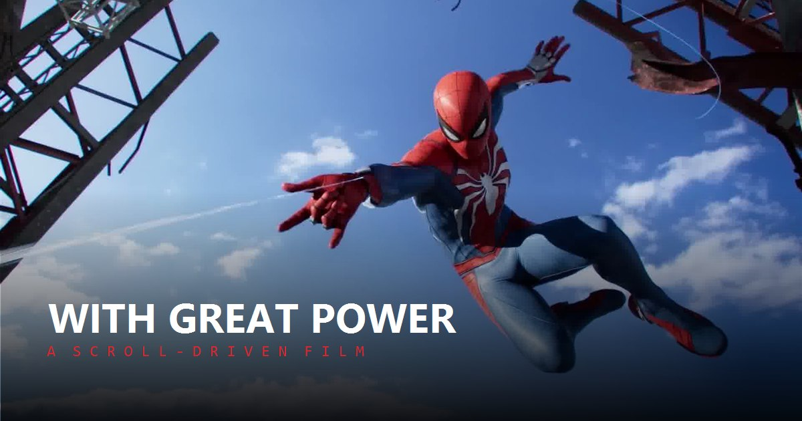

The work I make with AI and still call my own
Spotify plays a 30-second preview unless you are signed in.
I use AI the way I use anything else in the stack. It absorbs the mechanical work and gets out of the way where judgment matters. What follows is what that actually produced, and, for each one, the part a model did not do.
// The work
Built with it
Work projects, side projects, and one game you can walk around in.
-
The Unfinished World
A world you walk around in the first person rather than scroll.
Enter the worldIt opens half-built: three tools are scattered across it, and the structure only comes back as you find each one and install it. The three are Figma, Claude and Aceternity, which is a fair description of how most of this page got made as well.
-

With Great Power
Sixty seconds of film, scrubbed frame by frame by your scroll.
Scrub the filmThe footage is a Marvel trailer. The pacing is mine. It opens nearly still, one of the slowest stretches in the piece, so the first scroll reads as moving time rather than moving a page. By the velocity chapter the same gesture covers 3.6× more film.
-
This portfolio
Hand-built with Claude Code. No template, no page builder.
See the workI specified the token system, the dark theme, the accessibility pass and every interaction; the agent wrote against that spec and I reviewed each change.
-
Costimizer AI assistant
The assistant layer for a cloud cost dashboard at BigOhTech.
Read the case studyThe design problem was making an opaque model legible, not making it look clever, so the work went into the empty state, the wording, and what happens when the answer is wrong.
-
Ask Nitansh
The question widget on the portfolio.
Try itIt retrieves from a knowledge base I wrote by hand rather than generating answers, so it can only ever say things I have actually said. Deliberately the boring choice.
-
Cinematic concept pages
Landing pages built around generated footage, the one at the top of this page included.
The video is a model’s output. The composition, the masking that keeps type off the subject, and the behaviour on a phone are not.
Smaller machines
The parts nobody is meant to notice. Each one is running on this site right now, so none of it has to be taken on trust.
-
Interaction
A pointer with eleven states
The site draws its own cursor. Every state the browser used to express has a glyph in one family, each stamped twice so a multi-part shape like the hand gets a single clean outline. It hands the real cursor back on touch, over an iframe, and whenever reduced motion is set.
11 glyphs · 3 modifiers · 1 family
Move your mouse over it -
Data
A heatmap that is not decoration
The activity grid on the portfolio is read from the Claude Code transcripts on my own machine, summed per day by a build script. It is the only honest way to put a number on this page: if the work stops, the grid goes empty on its own.
See the grid -
Media
A record player that respects the licence
The turntable at the top of this page plays a real track, which means no audio file is hosted here. The Spotify embed is built on the first press and not a moment earlier, so nothing loads for a visitor who never reaches for it.
0 bytes of audio until you press play
Back to the deck -
Build
The whole site as one file
A build step folds every stylesheet, script and image into a single HTML document with the assets as data URIs. It exists for the times a link will not do: an email attachment, a locked-down laptop, a reviewer with no internet.
1 file · 0 requests beyond the fonts